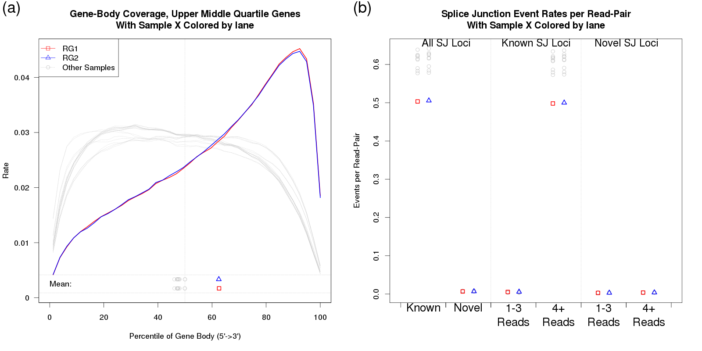

Next: Secondary Utilities Up: QoRTs Package User Manual Previous: Visualization Contents
Subsections
Identifying Problems
QoRTs produces a vast array of output data, and the interpretation of said data can be difficult.
Proper quality control must consider the study design, sequencer technology, study species, read length, library preparation protocol, and numerous other factors that might affect the metrics produced by QoRTs. In some datasets, apparent "abnormalities" may be expected. Similarly, depending on the type of downstream analysis that is being performed, some errors or artifacts may be irrelevant.
When an unexplained abnormality is recognized, one must decide what to do with the data. Unfortunetely this question is nontrivial, and depends on numerous factors. Bioinformaticians must be aware of the statistical assumptions that are being made in the downstream analyses, and must consider the conditions under which such assumptions would be violated.
Some abnormalities will not affect a given analysis and thus can be ignored outright. Some may require that the offending sample(s) be removed from the analysis. Others may necessitate additional steps to normalize the data or adjust for confounding factors. And finally, some artifacts may be so severe that the intended analysis will be impossible using the supplied data. Ultimately bioinformaticians must use their own judgement to determine what action should be taken, should an abnormality be discovered.
Here we present two examples of data-quality issues that were incidentally discovered during the development of the QoRTs software package. Note that the sequencing data presented in these examples are atypical, and were chosen because they illustrated succinctly the abnormalities in the data.
Example 1: Sequencer Hiccup
In our first example, an rare hardware-level fault of unknown origin caused a shift in the sequencing scanner at the 53rd read cycle of read 2. As a result, a small fraction of the reads (around half of a percent) were marked with N's for the remaining 48 bases, as they were now outside the limits of the image frame. This appears to have been a freak occurance: we have not seen this issue before or since. Selected plots from this QC run are displayed in Figure 34.
{kind=link}
As you can see in Figure 34a and c, in some of the replicates the rate at which the sequencer assigned N's increased more than 10-fold after cycle 53. Furthermore, in figures 34b and d, the replicates also displayed a small but abrupt increase in the clipping rate. This was due to the fact that aligner (RNA-Star) always clipped reads when they had no remaining "called" nucleotides.
These plots not only point out the existance of a problem, when examined together they can also be used to substantially narrow down the list of possibile underlying causes. In 34a and b it can be clearly seen that the abnormality is not consistent within samples, ruling out errors in sample or library prep, or indeed anything prior to the sequencing itself. If the issue was due to an artifact occurring prior to sequencing, it would be consistent across technical replicates. Examining Figure 34c and d, it becomes obvious that the issue is specific to one of the sequencer lanes. The abnormality only appears in lane RG2, and not in lane RG1.
Finally, based on examination of 34b and d it can be inferred that the excess missingness is most likely NOT uniformly or randomly distributed across all reads in the affected replicates. If the excess N's were evenly distributed then you would not expect a sudden and dramatic increase in the clipping rate, since RNA-STAR would still be able to align the remaining called bases in each read. Instead, we can hypothesize that this effect is specific to a small subset of reads which have "tails" of repeated N's starting at cycle 53.
This breadth of information considerably narrows the possible set of underlying causes.
When "N" rate was examined as a function of lane coordinate (via a custom-built script), we were able to identify problem and correct it. Since the reads affected were solely a function of the location on the physical flowcell, and since only a small percentage of reads were affected at all, we elected to simply drop the truncated reads.
Example 2: Badly Degraded RNA
|

|
In our second case study, one particular RNA sample was substantially more degraded than the others. All samples were poly-A selected, so this heightened degradation resulted in a strong 3' bias.
In Figure 35 the affected sample is plotted in red and blue (indicating the two technical replicates), whereas all the other samples are plotted in grey. The vastly-increased 3' bias can be clearly identified in 35a. Figure 35b shows that this had a substantial effect on the rate at which splice junction events were observed. Excess 3' bias can have broad impact, compromising estimates of gene-level and transcript-level abundance, and consequently compromising differential expression or differential splicing analyses.
{kind=link}
As a result, outliers like this should generally be dropped prior to analysis.
Next: Secondary Utilities Up: QoRTs Package User Manual Previous: Visualization Contents Dr Stephen William Hartley 2015-11-09